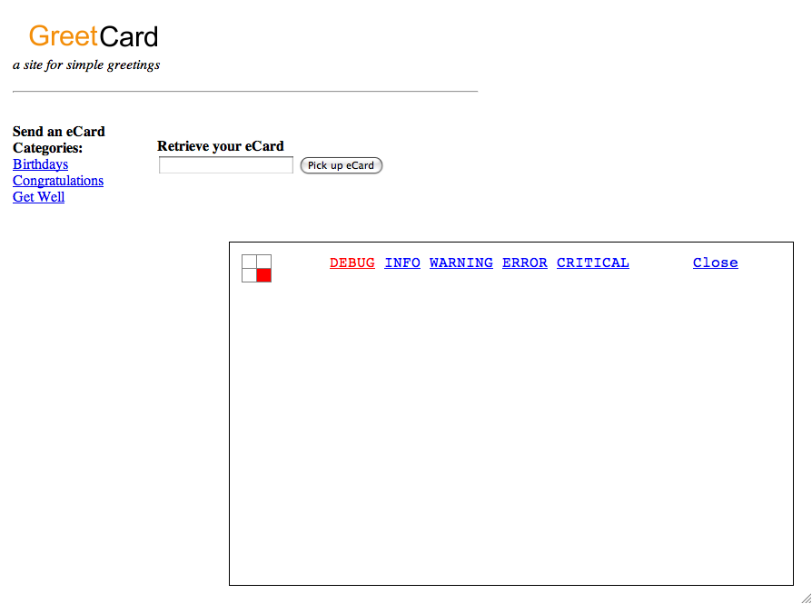
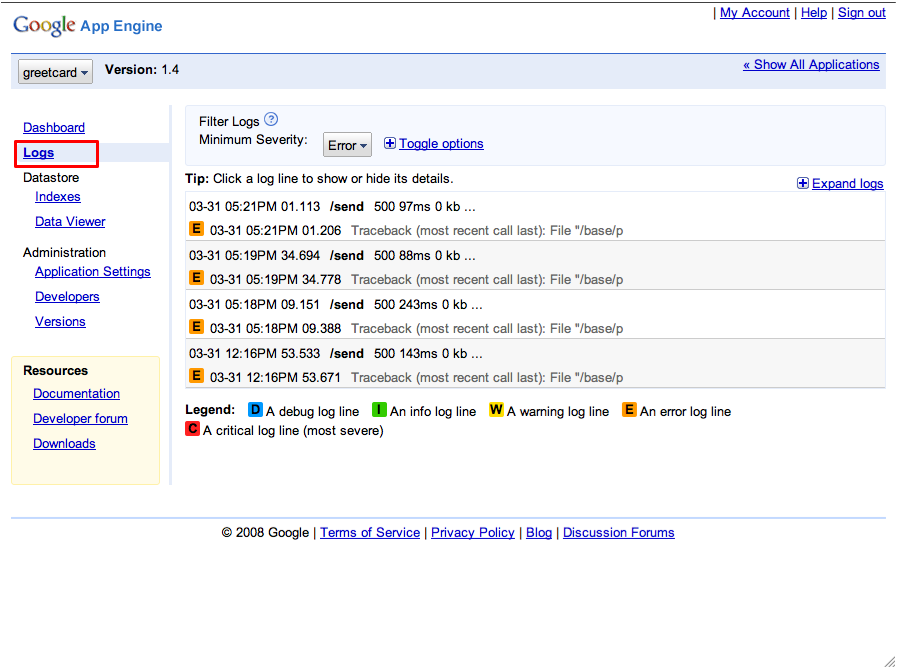
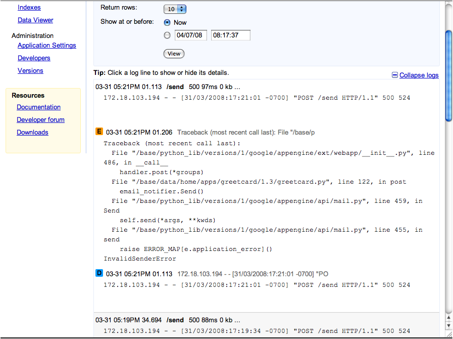
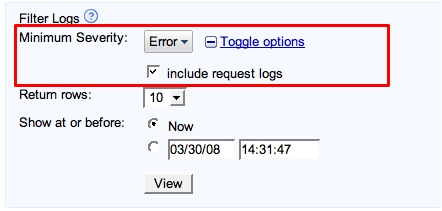
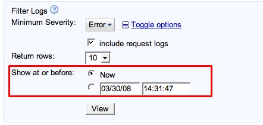

Introduction
Google App Engine uses the Python logging module to allow you to log events that take place in your application. The logs that have been generated by your application are viewable under that application in the Administration Console. We also include all requests made to your application in our logging console.
To familiarize yourself with how the Python logging module works, please see the module documentation at Python.org.
Logging Different Kinds of Events in your Application
The Python logging module allows a developer to log 5 levels of severity: Debug, Info, Warning, Error and Critical.
Below is an example on how one might use some of these levels to effectively log events in a simple Guestbook application:
import logging
import os
import datetime
import wsgiref.handlers
from google.appengine.api import users
from google.appengine.ext import db
from google.appengine.ext import webapp
from google.appengine.ext.webapp import template
class Post(db.Model)
author = db.UserProperty()
content = db.StringProperty()
date = db.DateTimeProperty()
class MainPage(webapp.RequestHandler):
def get(self):
# Retrieve existing posts from the datastore when getting the Main Page
try:
post_query = db.GqlQuery('SELECT * FROM Post ORDER BY date DESC')
posts = [post for post in post_query]
except:
logging.error('There was an error retrieving posts from the datastore')
template_values = {
'posts': posts,
}
path = os.path.join(os.path.dirname(__file__), 'index.html')
self.response.out.write(template.render(path, template_values))
class Guestbook(webapp.RequestHandler):
# The user has posted a comment to the guest book
def post(self):
logging.debug('Start guestbook signing request')
post = Post()
if users.get_current_user():
logging.info('Signed by user %s' % users.get_current_user().nickname())
post.author = users.get_current_user()
else:
logging.info('Signed by anonymous user')
post.content = self.request.get('content')
post.date = datetime.datetime.now()
try:
post.put()
except:
logging.error('There was an error saving comment %s' % self.request.get('content'))
logging.debug('Finish guestbook signing')
self.redirect('/')
def main():
# Set the logging level in the main function
# See the section on Requests and App Caching for information on how
# App Engine reuses your request handlers when you specify a main function
logging.getLogger().setLevel(logging.DEBUG)
application = webapp.WSGIApplication([('/', MainPage),
('/sign', Guestbook)],
debug=True)
webapp.util.run_wsgi_app(application)
if __name__ = '__main__':
main()
In the above example the logging method debug() is called to give us information about what requests our app handles. The info() method is called to give us information about the users of our application, and the error() method is called to let us know where our applications is experiencing errors.
Later, we can use this information to filter out only the actions we are interested in. This will help us troubleshoot our code, improve the user experience, or add additional features to our application.
Viewing the Log Information in Real Time
While the logs are available to peruse in the admin console, sometimes it is helpful to see events being logged in your application in real time.
To see logging information for your application, simply append '?debug' to the end of the URL. For example, if your application is running at http://helloworld.appspot.com/ you can view the debug console in real time by typing in http://helloworld.appspot.com/?debug. The debug console will appear in the lower right hand side of your app, as shown here in a simple greeting card application:

The console will let you view the logs as they are generated by events on your website. The links on the console allow you to choose between debug, info, warning, error and critical logs.
If you are running your application locally, on top of the development web server that is included in the App Engine SDK, the logs are displayed in the console in real time.
Access Application Logs in the Administration Console
In order to see all of the logs generated by your application, sign in to your Administration Console at http://appengine.google.com/admin. In the left hand navigation column, click on the 'Logs':

You will initially see a summary of the ten most recent log events. You can expand 'details' to see more information, including a more verbose version of the request that triggered the event, any relevant trace back, and the full text of your log line.

Filtering Log Results by Severity
On the logs page within your Administration Console, you can choose to view only those logged events that are above a certain severity. Debug events are considered the lowest severity, Critical events are considered the highest.
For instance, if you select a minimum severity of 'Warning', all warning, error, and critical log events will be displayed.

Locating Past Events in your Logs
If you would like to troubleshoot an event that took place at some point in the past, you can also specify a date and time period to jump to in the logs:

Once you specify a date and time and click 'View', the logging console will update the view with the first 10 logs at or before that time period. Clicking 'Next 10' will page through the results in descending order before the last time period on the page.